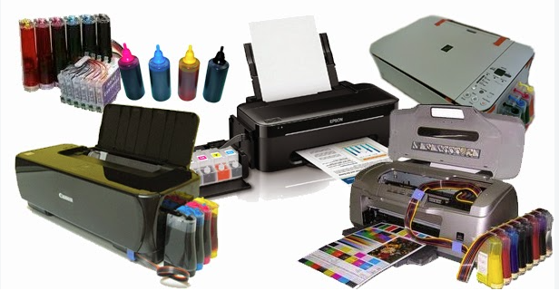
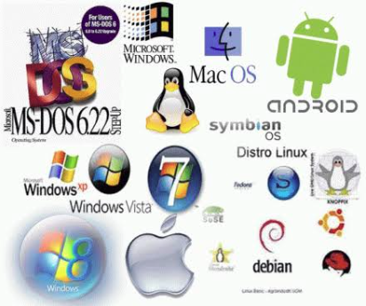

| Bil | jenis perkhimatan | Gambar | keterangan |
|---|---|---|---|
| 1 | Servis komputer | komputer di kemaskini oleh orang yang berpengalaman mengenalpasti sama ade komputer anda terkena virus atau tidak menaik taraf keselamat komputer anda | |
| 2 | rangkaian | membuat perkhidmatan asas rangkaian meningkat kan keselamat network anda perkhidmatan storan |
|
| 3 | pencetakan |  |
menyediakan servis printing menyediakan servis fotostat |
| 3 | perisian |  |
servis pembangunan laman web servis pembangunan aplikasi mudah alih servis sistem pengurusan khas servis penyelenggaraan dan penambah baikkan |